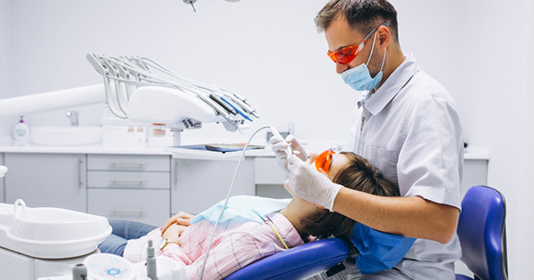
From Root Canal to Implants Top Dental Treatments at Sri Sai Dodda Dental Care clinic in Narasaraopet
Maintaining good oral health is essential for overall well-being.
Read More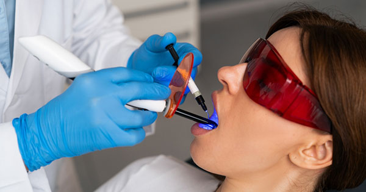
Top Benefits of Choosing Laser Dentistry At A Dental Clinic in Narasaraopet
Laser dentistry is changing the way dental treatments are done today.
Read More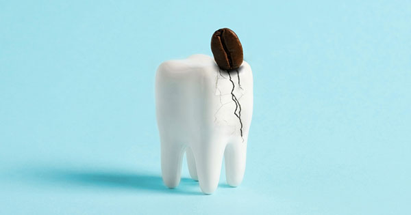
Foods That Harm Your Teeth: What to Avoid for a Healthy Smile
Having healthy teeth is important for your overall health and confidence. The foods you eat can have a big impact on your
Read More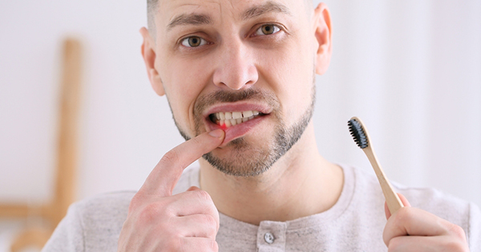
Bleeding Gums While Brushing Expert Advice From Dentist In Narasaraopet
Bleeding gums are a common sign of gingivitis and various periodontal diseases
Read More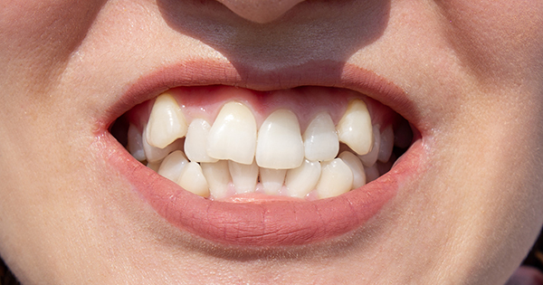
How to fix gaps between teeth without braces
Teeth play a crucial role in overall health and confidence, serving as vital tools for chewing, speaking,
Read More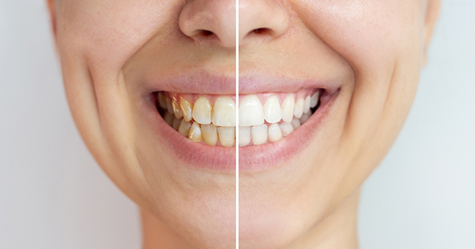
Is teeth whitening right for you - Pros and cons
Teeth can become stained or discolored due to numerous factors. If you wish to achieve a brighter and
Read More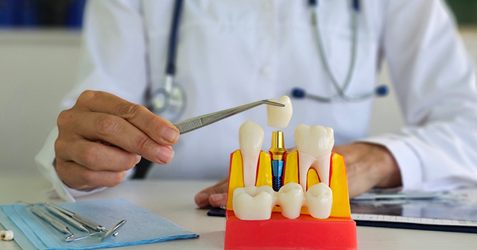
Dental implants vs Dentures - Which option is right for you
When considering the replacement of one or more missing teeth, individuals have several options
Read More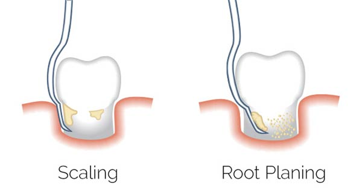
Regular Scaling Vs Deep Scaling or Root Planing
Everybody knows that oral hygiene is important when it comes to maintaining a attractive and healthy
Read More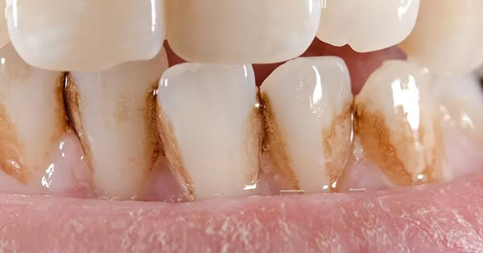
What can cause tooth discoloration and stains?
Have you seen your teeth aren't as white as they used to be and perhaps not quite as white as you'd like?
Read More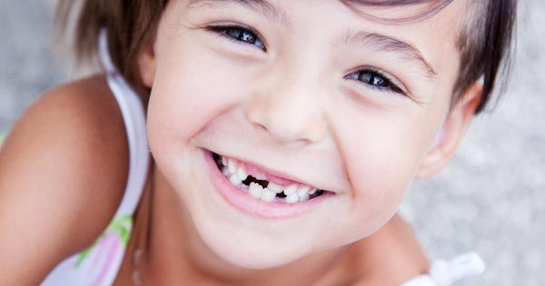
What to do if your child has a chipped tooth?
Your kid comes running into your home with seemingly a bloody lip. You will quickly come to know that...
Read More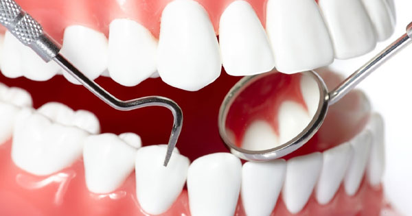
Why oral hygiene is important?
Dental hygiene is essential to your oral health since it decreases your risk of developing tooth decay First of all, they can create painful or visually unappealing symptoms ...
Read More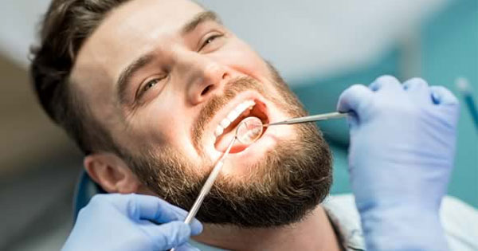
Dental care after 30+ years
ince your age and oral hygiene are connected, it is imperative to take good care of your teeth and dental health. Make this as the first step toward a happy and stress-free 30s ...
Read More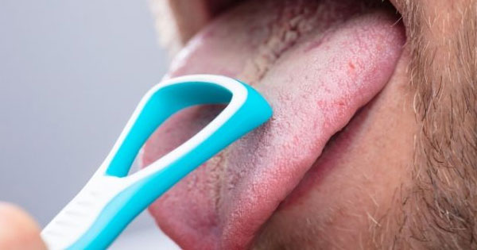
Can brushing your tongue damage your taste buds?
Tongue scraping is a process where you drag a tool from the rear of your tongue to the front to eliminate small particles and bacteria...
Read More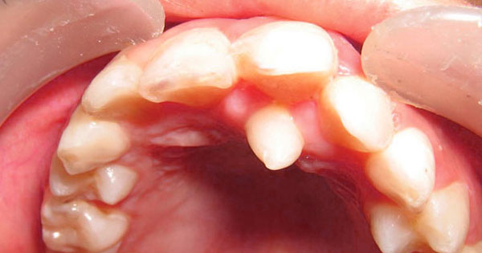
Do you need to remove your extra teeth or hyperdontia?
You have two sets of teeth in your life. As a kid, you have 20 primary or baby teeth. These teeth drop out, and 32...
Read More
What are the stages of tooth decay (tooth erosion)?
Tooth decay happens when foods high in carbohydrates like fruits, bread, candy or milk, adhere to the outer layer of your teeth...
Read MoreSimple practices that will help you to keep bad breath away
Do you want to keep your breath fresh and clean? Then get rid of that gum disease. If you have bad breath, keep a note of all the foods...
Read More